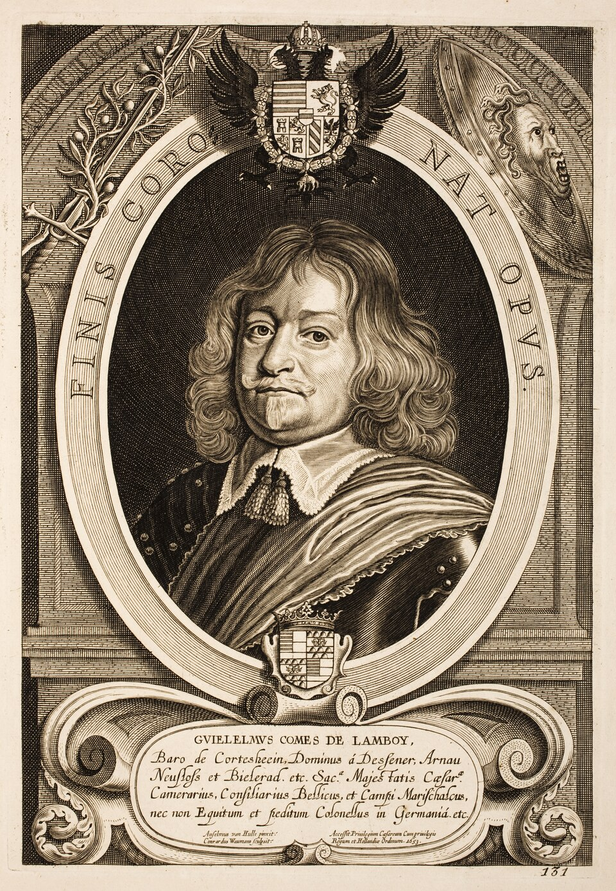
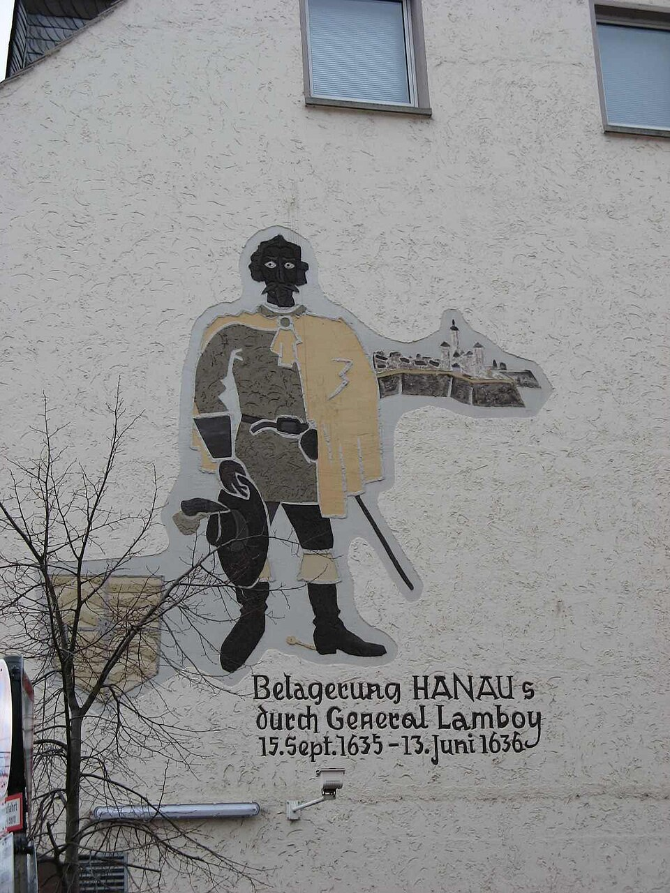
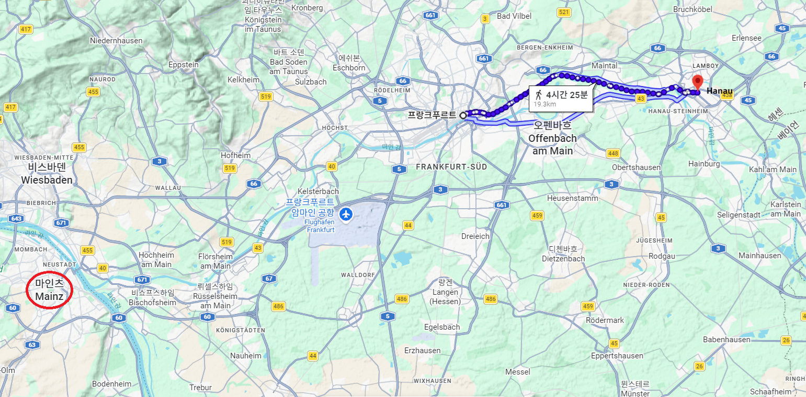
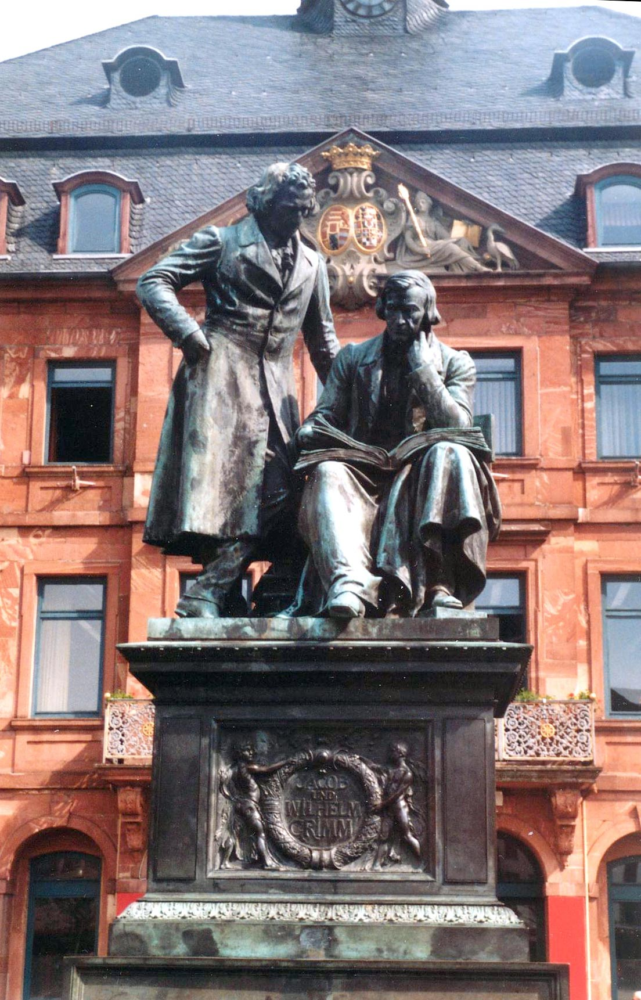
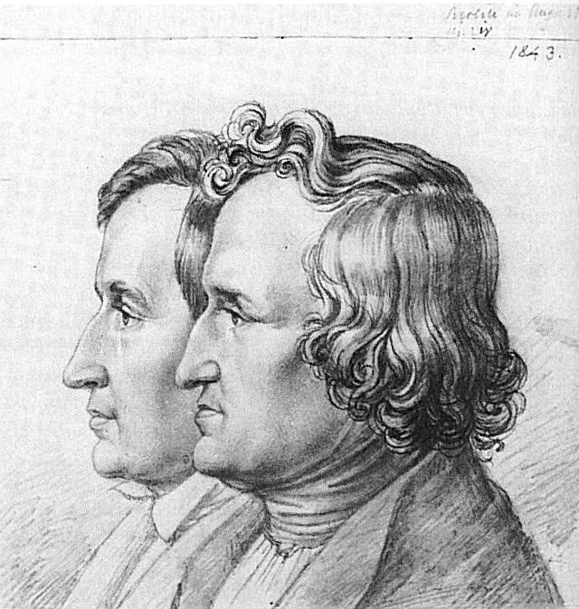
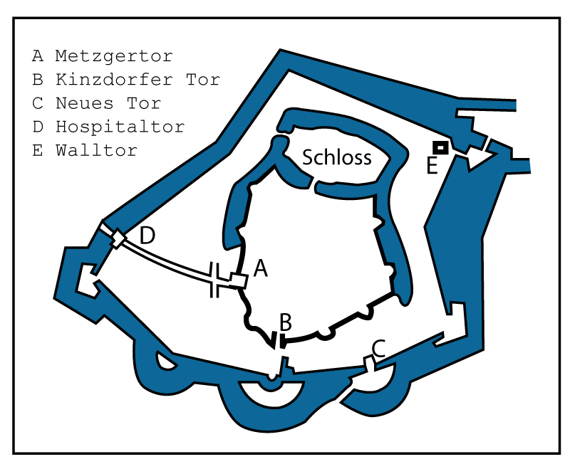
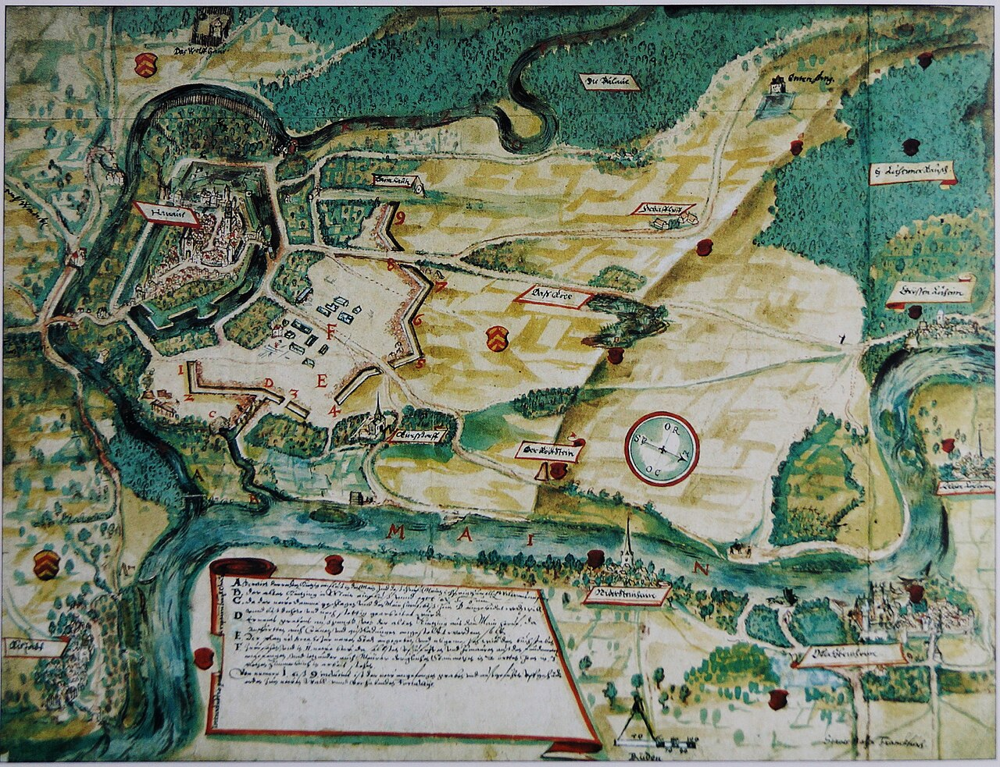
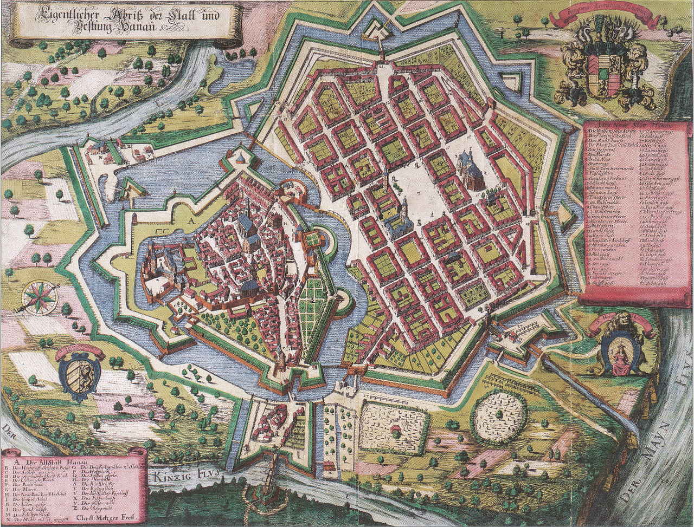
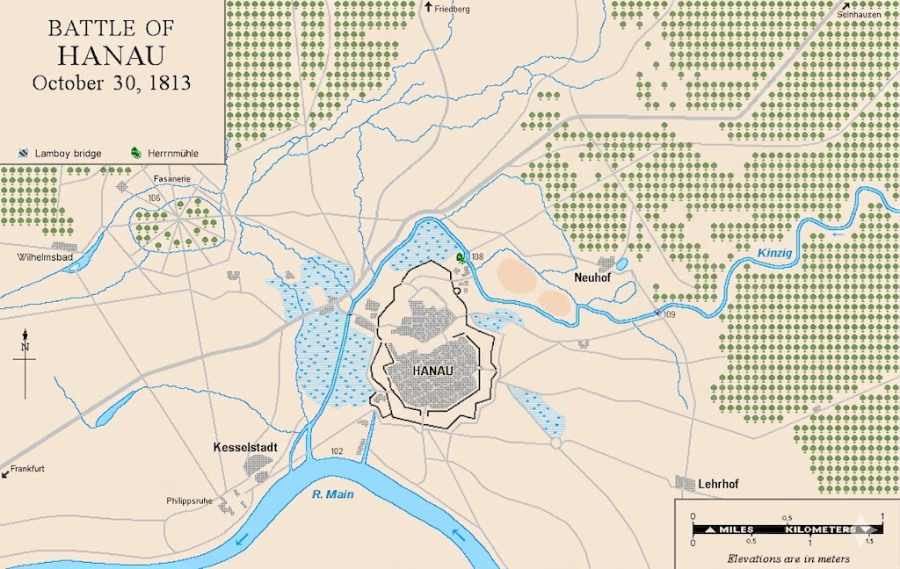
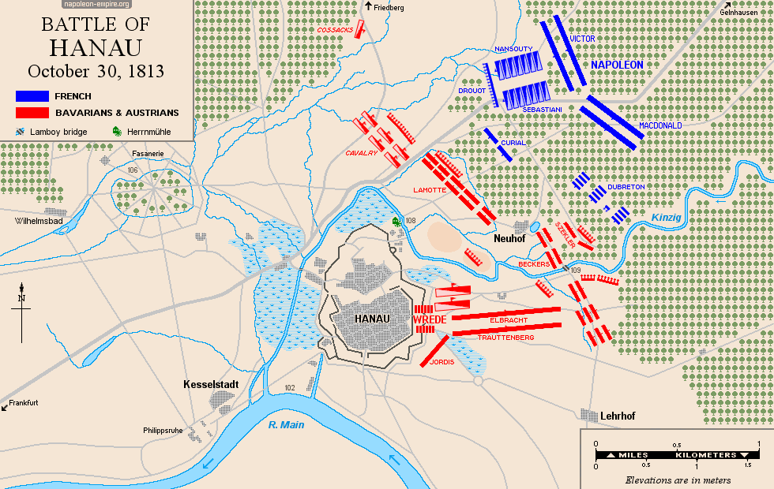

하나우 전투 (3) - 브레더의 사연
게시: 2026-06-08T06:30:36+09:00
10월 29일, 겔른하우젠(Gelnhausen) 인근에서 밤을 보내던 나폴레옹은 남서쪽 20km 정도 떨어진 하나우(Hanau)에 브레더의 바이에른-오스트리아 연합군 약 4만3천이 저지선을 구축하고 있다는 보고를 받았습니다. 나폴레옹은 앞을 막는 적군이 어느 정도이든, 이미 설명드린 이유에 따라 무조건 마인츠로 갈 생각이었습니다. 하지만 나폴레옹에게는 병력이 크게 부족했습니다. 당장 그의 수중에 있던 것은 빅토르의 제2군단, 막도날의 제5 및 제11군단, 그리고 고참근위대 일부뿐이었습니다. 이렇게만 보면 총 4개 군단급 병력이었지만, 실은 각 군단의 손실이 워낙 컸기 때문에 4개 군단을 다 합해도 2만 정도에 불과했습니다. 마르몽과 베르트랑 등이 이끄는 나머지 군단들은 좁은 길을 따라 대군이 움직일 수 없었으므로 하루씩의 간격을 두고 뒤따라 오고 있었습니다. 나폴레옹은 새벽 일찍부터 행군을 시작하여, 오전 7~8시 경에 하나우 북서쪽의 람보이(Lamboy) 숲에 도착했습니다. 이 숲 안에는 바이에른군의 유격병들이 자리 잡고 있었으므로 나폴레옹도 먼저 유격병들을 보내어 그들을 몰아냈습니다. 람보이 숲을 장악한 뒤 숲 언저리까지 나아가 그 앞의 평원과 거기에 펼쳐진 바이에른-오스트리아 연합군의 방어진을 망원경으로 관찰한 나폴레옹은 이렇게 한 마디 탄식을 했습니다. "내가 브레더를 백작으로 만들어 주었지만, 장군으로 만드는 데는 실패했군."

(하나우 북동쪽의 숲에 붙은 람보이(Lamboy)라는 이름은 의외로 스페인 합스부르크 제국의 장군인 기욤 드 람부아(Guillaume de Lamboy)에게서 나온 것입니다. 그는 벨기에 태생으로 프랑스어를 모국어로 쓰는 왈룬(Walloon) 귀족 집안 출신인데, 당시 네덜란드-벨기에 일대를 지배한 스페인 합스부르크 제국군 소속으로 30년 전쟁에 참전하여, 1636년 하나우를 포위했습니다. 그때 람부아 장군이 주둔했던 숲이라고 해서 그 숲 이름이 람보이 숲이 되었다고 합니다.)

(1636년 하나우를 포위한 적장의 이름을 따서 숲 이름을 짓는 것이 이상하게 들릴 수도 있는데, 이유는 그때 람부아 장군은 9개월 간의 포위 끝에도 결국 하나우를 함락시키지 못했기 때문입니다. 즉 하나우에서는 일종의 승전 기념으로 삼은 것이지요. 하나우에서는 람부아가 결국 퇴각했던 1636년 6월을 기념하여 매년 6월 람보이페스트(Lamboyfest)라는 축제를 연다고 합니다. 이 사진은 그 축제 관련 벽화입니다.) 나폴레옹이 브레더의 방어진에 대해 이렇게 혹평을 한 이유는 간단했습니다. 브레더의 방어선은 하나우 앞을 흐르는 킨지히(Kinzig) 강에 의해 양분되어 있었을 뿐만 아니라, 그 중 좌익은 아예 킨지히강을 등지고 늘어서 있었던 것입니다. 이건 아무리 손자병법을 읽지 않았다고 해도 너무나 엉망인 방어선이었습니다. 대체 왜 브레더는 이런 엉망진창 방어선을 쳤을까요? 알고 보면 브레더에게도 사정이 있었습니다. 이날 다른 곳이 아니라 하나우(Hanau)에서 전투가 벌어진 것은 브레더의 선택이었습니다. 왜 브레더는 마인츠나 프랑크푸르트 같은 거점 도시가 아니라 프랑크푸르트로부터 약 25km 동쪽에 위치한, 별로 유명하지 않은 소도시 하나우를 전장으로 택했을까요? 생각해보면 당연한 일이었습니다. 브레더의 바이에른-오스트리아군이 거기 배치된 이유는 나폴레옹으로 하여금 마인츠 말고 코블렌츠로 가도록 하기 위한 슈바르첸베르크의 작전 때문이었습니다. 그런데 나폴레옹이 마인츠 코 앞에 올 때까지 기다린다면 그 자체가 임무 실패였습니다. 따라서 나폴레옹이 마인츠로 방향을 정하기 훨씬 전에, 가급적이면 프랑크푸르트보다 더 동쪽에서 길을 막고 '여기 나폴레옹을 막아서는 군대가 진을 치고 있다아아~'라고 광고를 해야 했습니다. 프랑크푸르트에 방어선을 치는 것도 방법일 수는 있었습니다. 그러나 브레더가 해야 할 일은 후퇴하는 적을 완전히 막아서는 것이지, 쳐들어오는 적으로부터 도시를 지키는 것이 아니었습니다. 따라서, 프랑크푸르트처럼 마인(Main) 강변의 탁 트인 평원지대에 자리잡은 곳에 진을 쳤다가, 적군이 아군 방아선을 멀리서 빙 돌아 피해가버리면 그것도 피곤한 일이었습니다. 따라서 가급적이면 강이든 숲이든 산이든 복잡하게 얽힌 지역이라서 적군이 통과할 수 있는 길목이 좁은 곳이 딱 좋았습니다. 브레더가 그 일대의 지형을 살펴본 뒤 정한 곳이 바로 하나우였습니다.

(마인츠와 프랑크푸르트, 그리고 하나우의 위치와 거리입니다.)

(하나우는 그림(Grimm) 형제의 고향으로 유명합니다. 사진은 하나우에 있는 그림 형제의 동상입니다.)

(그림 형제 야콥(Jacob)과 빌헬름(Wilhelm)은 연년생으로서 각각 1785년, 86년 생입니다. 즉 나폴레옹 시대에 청년기를 보냈는데, 총 9남매 중 둘째와 셋째였던 이들은 매우 가난한 집안 출신이었습니다. 이 두 형제는 어려운 가정 형편에서도 어떻게든 공부를 하여 카셀(Kassel)에서 사서로 일했습니다. 덕분에 경제적으로는 넉넉하지는 못했으나 시간이 넉넉하여 전래 동화를 수집하는 등의 문필 활동을 이어갈 수 있었습니다. 베스트팔렌 왕국의 수도였던 카셀에서 사서로 일했다니까 생각나실 분들도 있겠는데, 맞습니다. 당시 이 그림 형제는 당시 베스트팔렌 국왕이던 제롬 보나파르트 밑에서 사서로 채용되어 일했던 것입니다.) 하나우는 당시 인구가 1만5천 정도로서 나름 규모가 있는 도시였고, 보방(Vauban)식의 근대화된 성곽과 해자를 갖춘 요새도시였습니다. 특히 브레더의 마음에 들었던 것은 그 일대의 지형이었습니다. 하나우는 앞서 설명드린 코블렌츠처럼, 마인강에 킨지히(Kinzig)라는 지류가 합류하는 좁은 삼각형 지형에 자리 잡은 도시로서, 방어에 매우 유리했습니다. 더 좋은 것은 바로 동쪽과 북쪽에 람보이(Lamboy)라는 울창한 숲이 킨지히강 및 마인강, 그리고 습지 등과 얽힌 채 자리 잡고 앉아서, 하나우 바로 앞을 지나가는 도로 외에는 대군이 이동하기 어려운 지형이라는 점이었습니다. 브레더 생각에 여기야말로 라이프치히에서 도망쳐오는 그랑다르메를 막아서기 딱 좋은 곳이었습니다.

(16세기 경의 하나우의 성곽과 해자의 도면입니다.)

(1597년 경 하나우 남쪽에 새로 건설되는 Neustadt, 즉 신시가지의 계획도입니다. 하나의 아래의 큰 강이 마인강이고, 거기에 합류하는 작은 강이 킨지히강입니다. 당시 하나우에서는 프랑스에서 도망쳐온 위그노(Huguenots), 즉 신교도들을 대거 받아들여 정착시켰고, 그들을 수용하기 위해 이렇게 신시가지까지 건설했습니다. 덕분에 30년 전쟁 때 하나우는 신교도들의 근거지가 되었습니다.)

(1684년 당시 하나우의 보방식 성곽과 해자의 모습입니다.) 그런데 10월 29일, 실제로 브레더가 하나우에 4만3천의 바이에른-오스트리아 연합군을 이끌고 도착하여 방어선을 치려고 보니, 생각한 것보다 상황이 좀 복잡했습니다. 그랑다르메는 북동쪽에서 도로를 따라 접근해올 것이므로 브레더 자신의 병력은 그 직각 방향인 북서쪽에서 남동쪽 방향으로 길게 늘어서야 했습니다. 그런데 자신이 늘어세울 방어선 한 가운데를 킨지히강이 관통하게 되어 있었던 것입니다. 더 나쁜 것은 킨지히강이 하나우 앞에서 크게 굽이치며 흐르는 바람에, 브레더의 방어선 중 일부는 강을 등지고 서야 할 판국이었습니다.

(1813년 10월 29일, 브레더에게 주어진 환경입니다. 여기서 북동쪽에서 접근해올 적군이 하나우 북쪽으로 지나가는 저 도로를 통과하지 못하게 방어선을 짜려면 어떻게 해야하겠습니까?) 하지만 브레더는 상관하지 않고 그냥 그대로 방어선을 펼치기로 합니다. 즉, 킨지히강 북쪽에는 바이에른군을 강을 등진 채 배치하고, 남쪽에는 오스트리아군을 강을 앞에 두고 배치했습니다. 이렇게 부대가 강으로 분단된 채로, 그것도 일부는 강을 등진 상태로 배치한 것은 분명히 좋은 선택은 아니었습니다. 그럼에도 브레더가 그런 배치를 강행한 이유는 크게 2가지였는데, 하나는 따로 뾰족한 수가 없었기 때문이었고, 다른 하나는 어차피 나폴레옹은 이쪽으로 오지 않을 것이라고 확신했기 때문이었습니다. 여기에 병력을 광고판처럼 넓게 펼쳐 놓으면, 쫓기는 입장인 나폴레옹은 굳이 이쪽으로 오지 않을 것이었습니다. 온다고 해봐야 일부 패잔병 부대뿐일 것이라고 브레더는 확신했습니다. 하지만 아무리 그래도 전체 부대가 킨지히강으로 양분된 상황은 좋지 않은 것이었습니다. 특히 그 양분된 부대 사이를 이어주는 것은 킨지히강에 놓인 람보이(Lamboy)라는 이름의 좁은 다리 하나뿐이라는 것은 매우, 매우 좋지 않은 일이었습니다.

(결과적으로 브레더가 짜낸 방어선의 모습입니다. 확실히 좋아 보이지는 않는데, 그렇다고 딱히 다른 방법이 보이지도 않습니다. 어쩌면 애초에 이 곳에서 나폴레옹을 막아서기로 한 결정, 즉 위치 선정이 잘못된 것일 수도 있습니다.) 딱 이 상황에서 10월 30일 아침 그랑다르메의 유격병들이 람보이 숲 속에 나타났습니다. 수천 명 규모의 그들은 패잔병 치고는 매우 집요하고 공격적으로 전진하여, 초계용으로 배치해두었던 바이에른 유격병들을 숲 속에서 몰아냈을 뿐만 아니라 평원까지 나와 사단급 병력들이 진을 치고 있는 브레더의 방어선 코 앞까지 접근했습니다. 물론 훨씬 숫자가 많을 뿐만 아니라 90여 문의 포병대가 만반의 준비를 갖추고 있던 브레더의 방어선 앞에서 그들은 맥없이 물러났습니다. 그런 상황에서 세바스티아니(Horace François Bastien Sébastiani)가 이끄는 수천의 기병대까지 숲 속에서 튀어나와 방어선을 위협하자 상황은 심각하게 돌아갔습니다. 이 기병대도 연합군 포병대의 집중 사격을 받자 물러났지만, 브레더는 앞에 나타난 것이 일부 패잔병들이 아니라 나폴레옹의 그랑다르메 본대라는 것을 비로소 깨달았습니다. 그럼에도 불구하고 상황은 브레더에게 유리했습니다. 킨지히강을 등지고 진을 친 것이 불리한 것은 후퇴할 때의 이야기인데, 브레더의 병력이 훨씬 우세한데다 포병 화력까지 훨씬 막강했으므로 후퇴할 이유가 없기 때문이었습니다. 나폴레옹의 그랑다르메는 평원을 휩쓰는 연합군의 포격에 눌려 몇 시간 동안 감히 숲 밖으로 진출하지 못했습니다. 시간에 쫓기던 나폴레옹은 초조해졌습니다만 정오 무렵까지도 그는 뾰족한 돌파구를 찾지 못했습니다. 이 때 나폴레옹에게 다가온 사람이 있었습니다. Source : The Life of Napoleon Bonaparte, by William Milligan Sloane Napoleon and the Struggle for Germany, by Leggiere, Michael V With Napoleon's Guns by Colonel Jean-Nicolas-Auguste Noël https://en.wikipedia.org/wiki/Karl_Philipp_von_Wrede https://en.wikipedia.org/wiki/Gelnhausen https://en.wikipedia.org/wiki/Battle_of_Hanau https://en.wikipedia.org/wiki/Hanau https://www.napoleon-empire.org/en/battles/hanau.php https://en.wikipedia.org/wiki/Guillaume_de_Lamboy,_Baron_of_Cortesheim